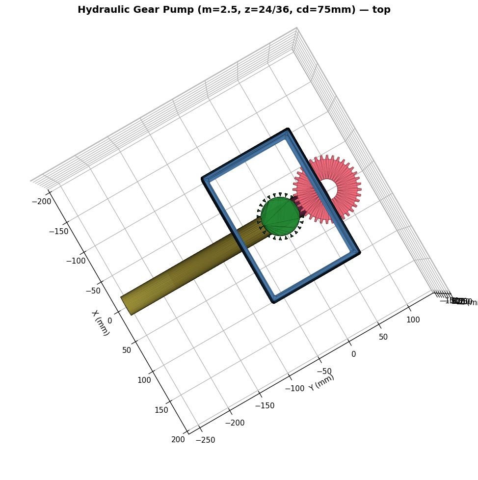

手绘草图, 文字描述, 通过 看→想→做→验 范式, 生成工业级 .step 几何.
43 个原子 op · 100% 真实实现 · OpenCascade 内核不是"一次性预测". 模仿工程师: 看完想清楚, 边做边看, 错了就回退.
手绘 PNG + 文字 → 结构化 JSON
part_type, dimensionsJSON → op 序列
43 atomic ops, Few-shot每步立即反馈
StepResult {ok, geometry}几何 + 碰撞 + 渲染
8 kind assembly check基础 33 op + v2.7 参考系 5 op + v2.8 齿轮 3 op + v2.9 碰撞 1 op. 卡片配色区分: 基础白 · v2.7 金 · v2.8 紫 · v2.9 珊瑚.
demo 15: housing (12 步 MechKernel pipeline) + 2 真实 involute 齿轮 + 2 轴 + 8 kind 装配验证 + 5 part 碰撞.

housing 用 MechKernel 12 步完整 pipeline (草图 → extrude → fillet → chamfer → hole → linear/circular_pattern → mirror), 齿轮用 v2.8 真实 involute, 验证用 v2.7 8 kind, 碰撞用 v2.9.
当前 v2.11, 自评分 6.5/10, 距离工业生产 1.0 还需 2-3 人月.
"看 → 想 → 做 → 验" 的拟人化范式, 让 LLM 不再是一次性预测, 而是边做边看, 错了就回退的工程师.v2.11 自评 · 6.5/10 · 距离 1.0 还需 AABB + 装配诊断 + 集成 aicad